Информация: Объект в системе Wialon — это транспортное средство, техника, человек или животное, за которыми ведется наблюдение.
Шаг 1: Доступ к системе и проверка прав
Для создания объекта необходимо:
Иметь включенную опцию "Может создавать элементы" в свойствах пользователя
Убедиться, что в свойствах учетной записи включена услуга "Объекты: Доступ"
Шаг 2: Создание нового объекта
С помощью переключателя выберите режим Объекты
Нажмите кнопку Создать
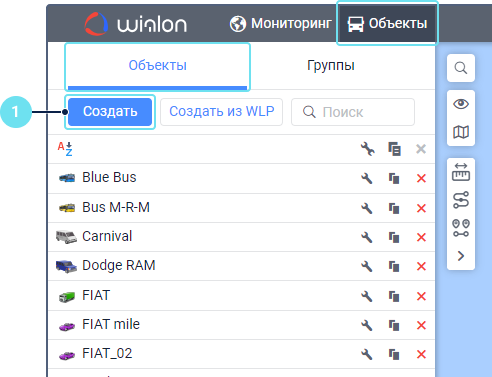
Шаг 3: Заполнение свойств объекта
На вкладке Основное заполните обязательные поля:
Имя — название объекта (ТС)
Тип устройства — выбор из выпадающего списка поддерживаемых устройств
Уникальный ID — идентификатор трекера (обычно IMEI или серийный номер)
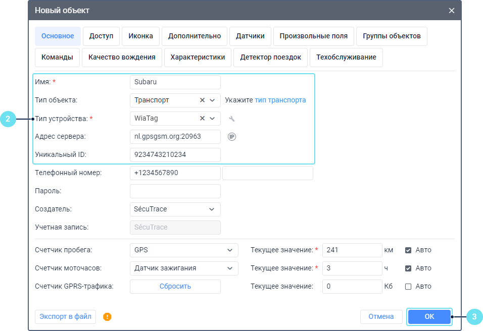
После выбора типа устройства, в поле Адрес сервера автоматически указывается IP-адрес сервера и порт для этого типа.
Шаг 4: Сохранение объекта
Нажмите кнопку Сохранить, чтобы завершить создание объекта.
Шаг 5: Проверка подключения
Перейдите на вкладку Мониторинг, куда автоматически добавляются созданные объекты.
Убедитесь, что объект подключен и отправляет сообщения в систему. В этом случае в списке в столбце Состояние соединения для него показывается зеленый маркер.
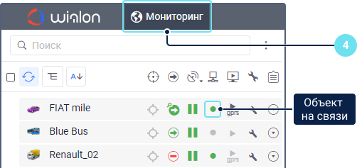
Важно: Нельзя создавать объекты в учетной записи верхнего уровня, и не рекомендуется создавать их в учетной записи с правами дилера.
2. Подключение и настройка датчиков
Информация: Для работы с датчиками необходимы права доступа: "Просмотр элемента и его основных свойств" и "Создание, редактирование и удаление датчиков". Также услуга "Объекты: Датчики" должна быть включена в свойствах учетной записи.
Шаг 1: Доступ к настройкам датчиков
В списке объектов выберите нужный объект
Нажмите на иконку редактирования свойств (значок карандаша)
Перейдите на вкладку Датчики
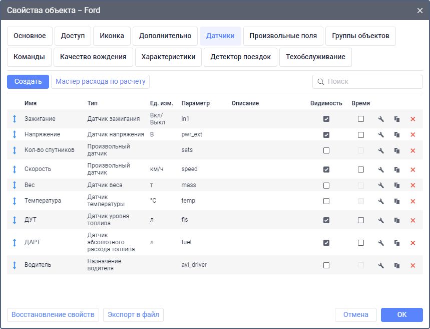
Шаг 2: Добавление датчика
Вы можете добавлять датчики двумя способами:
Из списка "Обычно используются" — для популярных датчиков, поддерживаемых вашим типом устройства
Создание датчиков вручную — для создания пользовательских датчиков
2.1 Подключение ДУТ (датчика уровня топлива)
Шаг 1: Создание датчика ДУТ
На вкладке Датчики нажмите кнопку Создать
В поле Имя введите название датчика (например, "ДУТ основной бак")
В поле Тип выберите Датчик уровня топлива
В поле Единица измерения выберите л (литры)
Шаг 2: Настройка параметра датчика
В поле Параметр введите имя параметра в зависимости от типа устройства (например, adc1, fuel, can_fls и т.п.)
Если вы не знаете точное имя параметра:
Временно закройте настройки
На вкладке Сообщения выберите объект и запросите последние сообщения
Найдите в них параметр, отвечающий за показания ДУТ
Шаг 3: Настройка расчета и фильтрации
Включите опцию Рассчитывать данные по датчику
Выберите Тип фильтрации:
Нет — если значения не требуют фильтрации
Медианная фильтрация — для сглаживания данных (укажите степень фильтрации)
Адаптивная медианная фильтрация — для автоматического подбора оптимальной степени фильтрации
Укажите Минимальный объем заправки и Минимальный объем слива
При необходимости настройте Расширенные настройки
Шаг 4: Настройка таблицы расчета
Перейдите на вкладку Таблица расчета и заполните значения тарировочной таблицы (см. раздел "Тарировка датчиков уровня топлива").
Шаг 5: Сохранение датчика
Нажмите кнопку Сохранить, чтобы завершить создание датчика ДУТ.
2.2 Подключение датчика температуры
Шаг 1: Создание датчика температуры
На вкладке Датчики нажмите кнопку Создать
В поле Имя введите название датчика (например, "Температура двигателя")
В поле Тип выберите Датчик температуры
В поле Единица измерения выберите °C (градусы Цельсия)
Шаг 2: Настройка параметра датчика
В поле Параметр введите имя параметра в зависимости от типа устройства (например, tempsens, engine_temp, can_temperature и т.п.)
Если датчик передает "сырые" значения, которые требуют пересчета в градусы, настройте таблицу расчета на соответствующей вкладке.
Шаг 4: Сохранение датчика
Нажмите кнопку Сохранить, чтобы завершить создание датчика температуры.
2.3 Настройка счётчиков
Шаг 1: Создание счётчика
На вкладке Датчики нажмите кнопку Создать
В поле Имя введите название счётчика (например, "Моточасы", "Счетчик пассажиров" и т.д.)
В поле Тип выберите соответствующий тип счётчика:
Датчик моточасов
Датчик счетчика
Импульсный счетчик
В поле Единица измерения выберите соответствующую единицу измерения
Шаг 2: Настройка параметра счётчика
В поле Параметр введите имя параметра в зависимости от типа устройства.
Шаг 3: Настройка дополнительных параметров счётчика
В зависимости от типа счётчика, настройте дополнительные параметры:
Для импульсных счётчиков — укажите коэффициент пересчета импульсов
Для моточасов — настройте валидацию по показаниям других датчиков
Шаг 4: Сохранение счётчика
Нажмите кнопку Сохранить, чтобы завершить создание счётчика.
3. Тарировка датчиков уровня топлива
Информация: Тарировка — это процедура создания таблицы соответствия между "сырыми" значениями датчика и реальным объемом топлива в баке.
Шаг 1: Подготовка к тарировке
Опустошите топливный бак. Убедитесь, что аккумулятор автомобиля заряжен и не сядет во время тарировки
Если ДУТ еще не установлен, установите его согласно инструкции
На время тарировки настройте трекер таким образом, чтобы данные сохранялись не реже, чем раз в 10 секунд
Подготовьте таблицу из двух столбцов: X и Y
X — значение напряжения или другого параметра датчика
Y — объем топлива в баке в литрах
Шаг 2: Проведение тарировки
Запишите время начала тарировки
В столбец X первой строки таблицы внесите значение параметра до добавления топлива, в столбец Y укажите 0
Разделите весь объем бака на 10-20 частей
Залейте первую порцию топлива
Подождите 2-3 минуты, пока уровень топлива стабилизируется
Запишите объем залитого топлива в столбец Y
Повторяйте шаги 4-6 до полного заполнения бака
Шаг 3: Получение данных датчика
В Wialon запросите сообщения от объекта за период тарировки на вкладке Сообщения
Найдите в сообщениях значения параметра ДУТ для каждой порции топлива
Для каждой точки тарировки рассчитайте среднее значение параметра и запишите его в столбец X таблицы
Шаг 4: Внесение тарировочных данных в систему
В свойствах объекта перейдите на вкладку Датчики
Выберите датчик уровня топлива или создайте новый
Перейдите на вкладку Таблица расчета
Включите инструмент Пары XY для автоматического заполнения таблицы
Введите пары значений X и Y из вашей тарировочной таблицы в формате "X1,Y1;X2,Y2;X3,Y3;..." (например, "100,0;150,10;200,20;...")
Нажмите кнопку Применить, чтобы заполнить таблицу расчета
Шаг 5: Проверка и корректировка
После внесения данных проверьте, как система отображает уровень топлива
При необходимости скорректируйте отдельные точки в таблице расчета
Сохраните настройки датчика
4. Создание и настройка геозон
Информация: Геозоны — это определенные области на карте, предназначенные для контроля за перемещением объектов в этих областях или за их пределами.
4.1 Создание геозоны вручную
Шаг 1: Доступ к созданию геозон
Перейдите на вкладку Геозоны в верхней панели
Нажмите на кнопку Создать
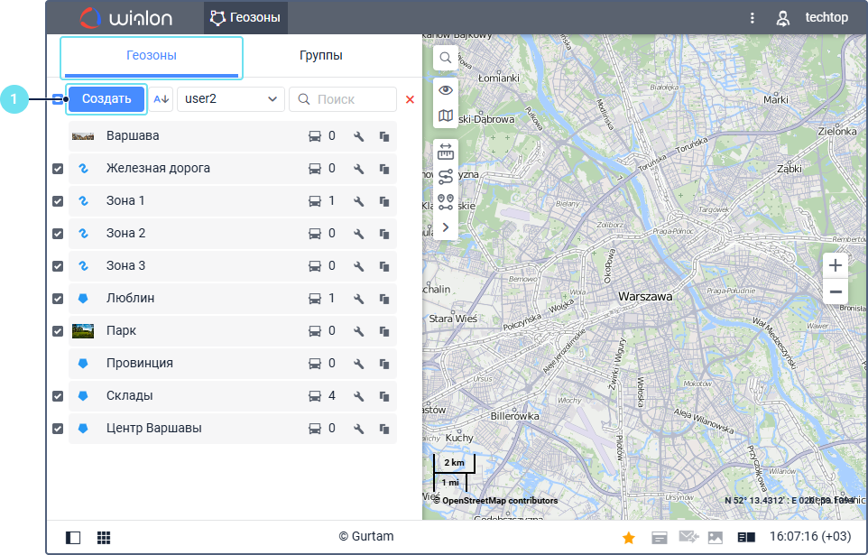
Шаг 2: Выбор типа геозоны
Выберите один из трех типов геозон:
Полигон — произвольная многоугольная форма
Линия — линия с заданной шириной
Круг — окружность с заданным радиусом
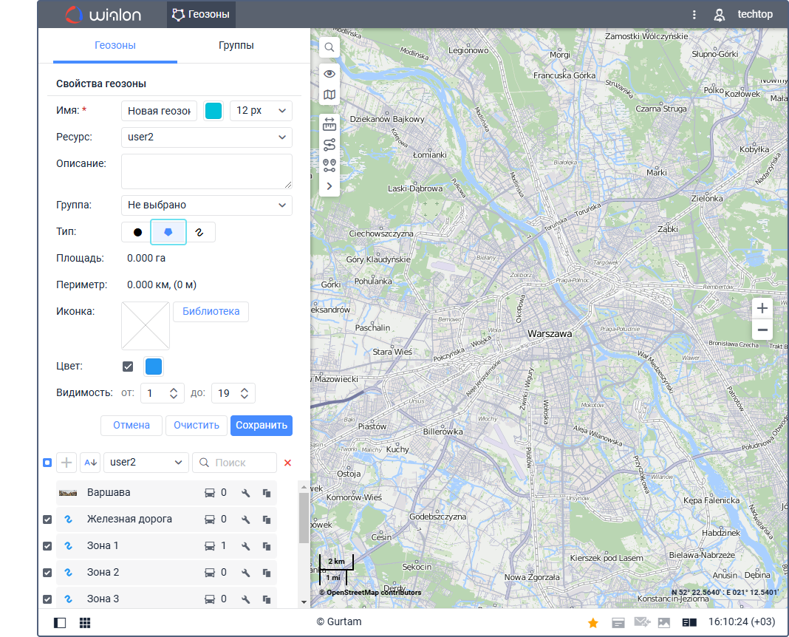
Шаг 3: Нанесение геозоны на карту
Для полигона:
Сделайте двойной щелчок по карте, чтобы поставить первую точку
Поставьте вторую и третью точки аналогичным образом
Продолжайте добавлять точки, формируя необходимую форму
Для линии:
Сделайте двойной щелчок по карте, чтобы поставить первую точку
Поставьте следующие точки, формируя линию
В свойствах укажите ширину линии
Для круга:
Сделайте двойной щелчок по карте, чтобы поставить центральную точку
В поле Радиус укажите радиус геозоны
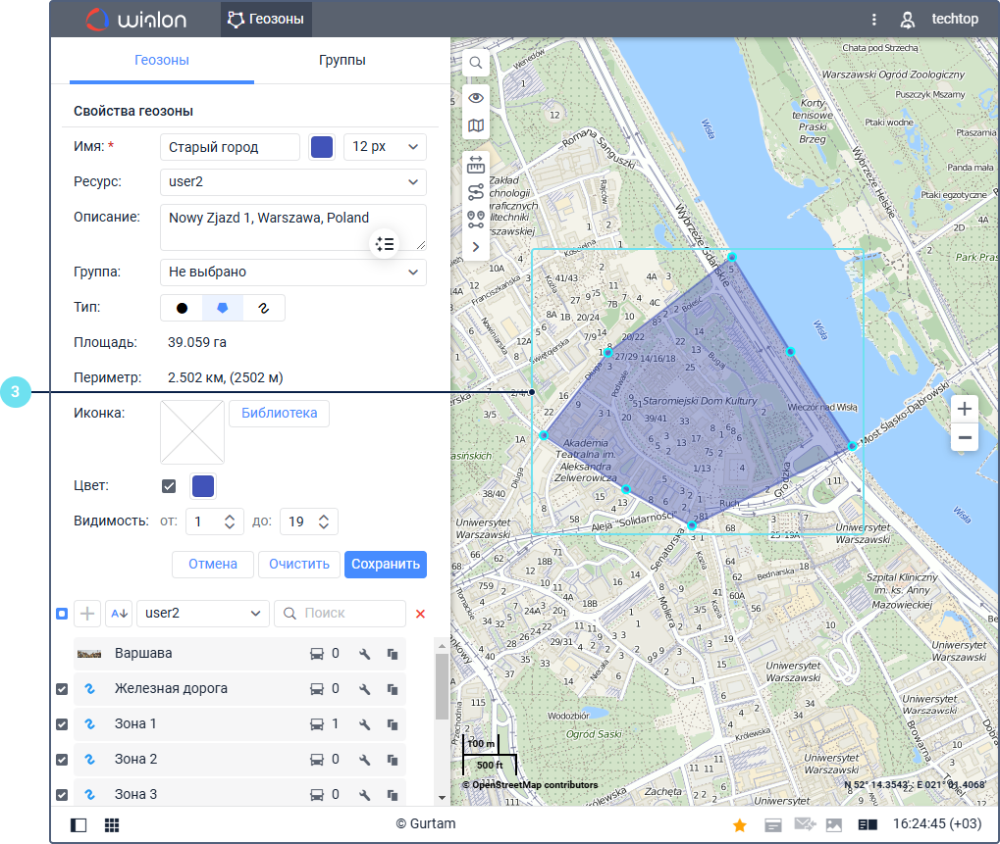
Шаг 4: Указание свойств геозоны
Укажите Имя геозоны
Выберите Цвет для отображения на карте
При необходимости укажите дополнительные свойства (например, описание, цвет подписи)
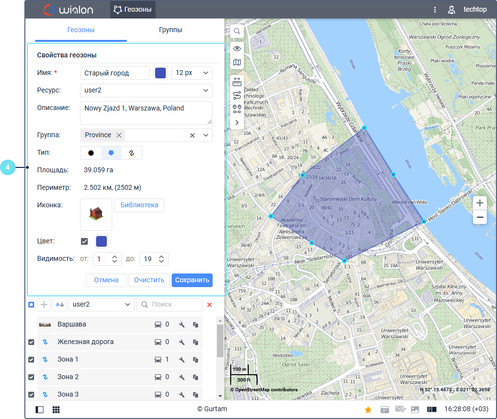
Шаг 5: Сохранение геозоны
Нажмите на Сохранить, чтобы завершить создание геозоны.
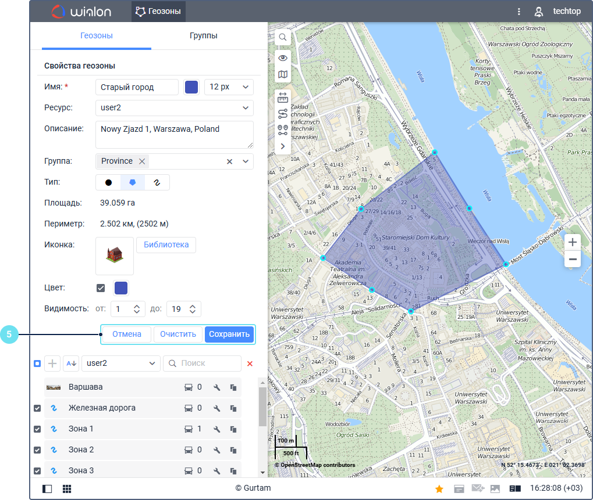
4.2 Создание геозоны по шаблону
Шаг 1: Импорт геозоны из файла
Перейдите на вкладку Геозоны
Нажмите на кнопку Импортировать (или выберите пункт меню Импорт из KML/KMZ)
Выберите файл формата KML или KMZ, содержащий геозоны
Следуйте указаниям мастера импорта
Шаг 2: Использование маршрутизатора
Для создания геозоны в виде линии можно использовать инструмент Маршрутизатор:
В верхней панели выберите Инструменты > Маршрутизатор
Укажите начальную и конечную точки маршрута
После построения маршрута нажмите Сохранить как геозону
Укажите имя и другие свойства создаваемой геозоны-линии
Шаг 3: Копирование существующих геозон
Вы также можете создавать геозоны на основе существующих:
Выберите существующую геозону в списке
Нажмите на кнопку Копировать
Внесите необходимые изменения в копию геозоны
Сохраните изменения
5. Создание отчёта под клиента
Информация: Отчеты позволяют объединять и анализировать все доступные данные об объектах, водителях и других элементах системы в удобной форме.
Шаг 1: Переход к созданию шаблона отчета
Перейдите на вкладку Отчеты в верхней панели
Нажмите на кнопку Создать в нижней левой части окна
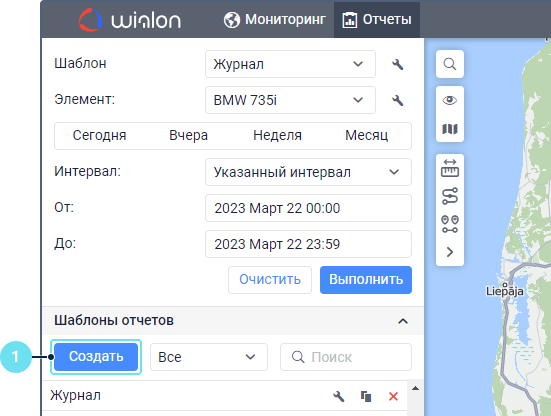
Шаг 2: Настройка свойств шаблона отчета
Укажите Имя шаблона отчета
Выберите Тип шаблона:
Объект — для анализа данных одного объекта
Группа объектов — для анализа нескольких объектов одновременно
Другие типы в зависимости от потребностей клиента
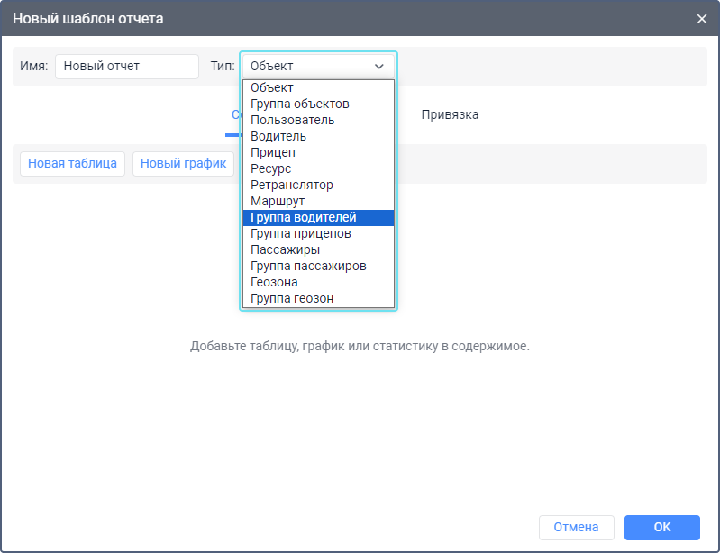
Шаг 3: Добавление содержимого в отчет
Перейдите на вкладку Содержимое
Нажмите на Добавить таблицу и выберите нужный тип таблицы:
Таблица Поездки — информация о поездках объекта
Таблица Стоянки — информация о стоянках
Таблица Заправки и сливы — информация о топливе
Таблица Геозоны — посещение геозон
Другие таблицы в зависимости от потребностей клиента
Настройте столбцы таблицы:
Выберите нужные столбцы
Измените их порядок при необходимости
Настройте фильтрацию и сортировку данных
При необходимости добавьте Графики, чтобы визуализировать данные:
Скорость движения
Уровень топлива
Показания датчиков
Добавьте Статистику, чтобы показать суммарные данные
Шаг 4: Настройка параметров отчета
Перейдите на вкладку Настройки
Настройте Интервал выполнения — период времени для отчета
Укажите параметры Детектора поездок — как система определяет начало/конец поездок
Настройте параметры вывода Карты — что отображать на карте
Укажите другие параметры в зависимости от потребностей клиента
Шаг 5: Привязка объектов
Перейдите на вкладку Привязка
Выберите объекты, для которых может использоваться данный отчет
Шаг 6: Сохранение шаблона отчета
Нажмите на кнопку Сохранить, чтобы завершить создание шаблона отчета.
Шаг 7: Выполнение отчета
В правой части окна выберите созданный шаблон
Укажите интервал времени для отчета
Выберите объекты для отчета
Нажмите на кнопку Выполнить
После выполнения отчет можно экспортировать в различные форматы (PDF, Excel, HTML и др.)
6. Настройка уведомлений
Информация: Уведомления позволяют контролировать перемещение объектов, показания датчиков, назначение водителей, прицепов и другие события.
Шаг 1: Доступ к настройке уведомлений
Перейдите на вкладку Уведомления в верхней панели
Нажмите на кнопку Создать
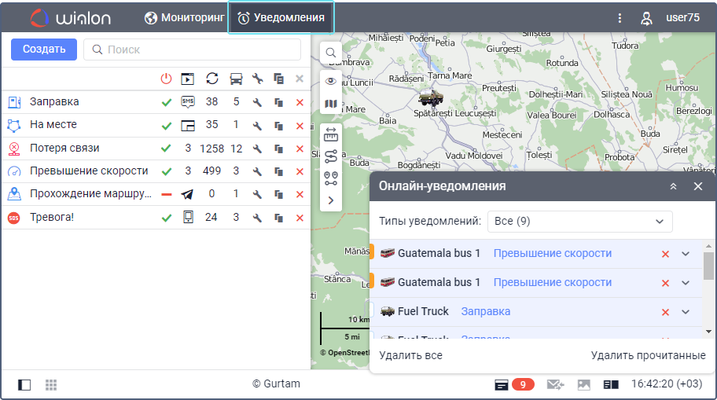
Шаг 2: Общие настройки уведомления
Укажите Имя уведомления
Выберите объекты, для которых будет работать уведомление
Настройте Время активности — когда уведомление будет активно
Выберите Тип уведомления (см. ниже)
6.1 Уведомления о превышении скорости
Шаг 1: Выбор типа уведомления
Выберите тип уведомления Скорость
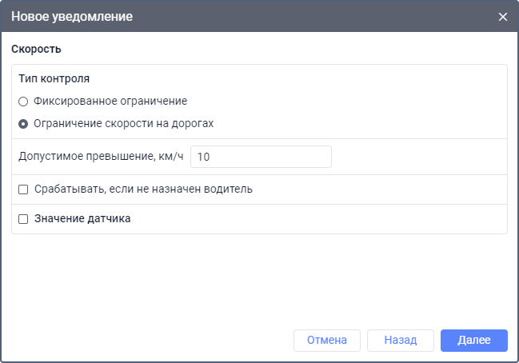
Шаг 2: Настройка параметров контроля скорости
Выберите Тип контроля:
Фиксированное ограничение — указываются минимальная и максимальная скорость
Ограничение скорости на дорогах — контроль соблюдения скоростного режима по картам
Укажите минимальную и максимальную скорость или допустимое превышение
При необходимости настройте дополнительные условия:
Контроль назначения водителя
Контроль значения датчика
Шаг 3: Настройка текста уведомления
Укажите текст, который будет показываться при срабатывании уведомления. Используйте специальные теги для вставки данных (например, %SPEED% для отображения скорости).
Шаг 4: Настройка действий при срабатывании
Укажите, какие действия нужно выполнить при срабатывании уведомления:
Показать всплывающее сообщение
Отправить SMS или email
Отправить сообщение в Telegram
Зарегистрировать событие в системе
6.2 Уведомления о геозонах
Шаг 1: Выбор типа уведомления
Выберите тип уведомления Геозона
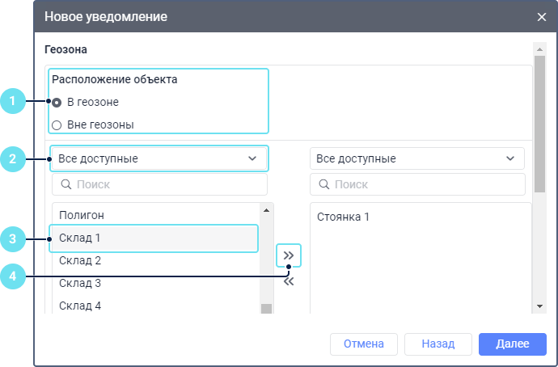
Шаг 2: Настройка условий срабатывания
Выберите тип контроля:
В геозоне — уведомление срабатывает при входе в геозону
Вне геозоны — уведомление срабатывает при выходе из геозоны
Выберите геозоны, для которых должно срабатывать уведомление
Выберите логический оператор (И/ИЛИ), если выбрано несколько геозон
При необходимости настройте дополнительные условия (скорость, значения датчиков)
Шаг 3: Настройка текста и действий
Настройте текст уведомления и действия при срабатывании, как описано в предыдущем разделе.
6.3 Уведомления о заправках и сливах
Шаг 1: Выбор типа уведомления
Выберите соответствующий тип уведомления:
Заправка — для контроля заправок
Слив — для контроля сливов топлива
Шаг 2: Настройка параметров контроля топлива
Выберите датчик уровня топлива для контроля
Укажите минимальный объем топлива для срабатывания уведомления
При необходимости настройте дополнительные условия:
Геозоны, в которых должно срабатывать уведомление
Скорость объекта (например, только на стоянке)
Шаг 3: Настройка текста и действий
Настройте текст уведомления и действия при срабатывании. Используйте специальные теги для отображения объема топлива и других параметров.
6.4 Уведомления о неисправностях
Шаг 1: Выбор типа уведомления
Для контроля неисправностей можно использовать различные типы уведомлений:
Значение датчика — для контроля показаний датчиков
Параметр в сообщении — для контроля определенных параметров
Потеря связи — для контроля отсутствия связи с объектом
Цифровой вход — для контроля состояния входов трекера
Шаг 2: Настройка уведомления о показаниях датчика
Для создания уведомления о неисправности на основе показаний датчика:
Выберите тип уведомления Значение датчика
Выберите контролируемый датчик (например, температуры)
Укажите диапазон значений, при которых должно срабатывать уведомление
Выберите тип срабатывания:
Внутри диапазона — если значение попадает в указанный диапазон
За пределами диапазона — если значение выходит за указанный диапазон
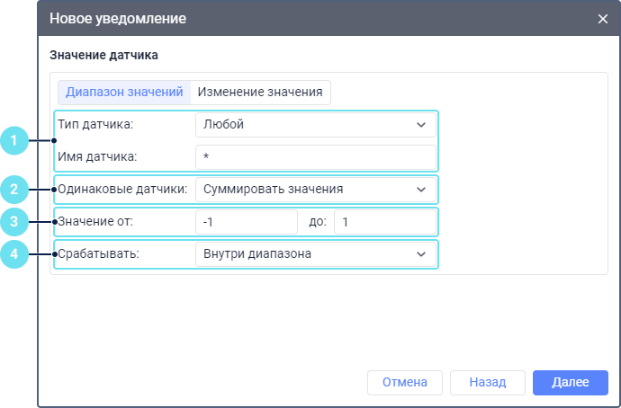
Шаг 3: Настройка уведомления о потере связи
Для создания уведомления о потере связи:
Выберите тип уведомления Потеря связи
Выберите, когда должно срабатывать уведомление:
При потере связи
При восстановлении связи
Выберите тип контроля:
Нет координат — отсутствие данных о местоположении
Нет данных — отсутствие любых данных от объекта
Укажите интервал времени, по истечении которого должно срабатывать уведомление
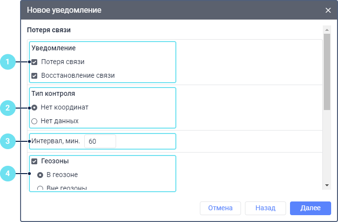
Шаг 4: Настройка текста и действий
Настройте текст уведомления и действия при срабатывании, как описано в предыдущих разделах.
7. Настройка ретрансляции данных
Информация: Ретрансляторы позволяют передавать сообщения от объектов с вашего сервера на другие серверы или системы в режиме реального времени или за прошедший период.
Шаг 1: Доступ к настройкам ретрансляции
Перейдите в Систему управления (CMS Manager)
Выберите раздел Ретрансляторы
Нажмите на кнопку Создать ретранслятор
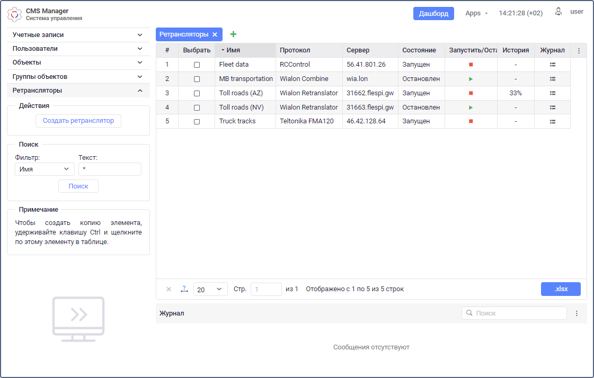
Шаг 2: Настройка основных параметров ретранслятора
Укажите Имя ретранслятора (минимум 4 символа)
Выберите Протокол ретрансляции из списка доступных
Укажите Сервер, на который должны ретранслироваться данные
При необходимости измените Порт
Заполните дополнительные поля, если они доступны для выбранного протокола:
ID диспетчера
ID организации
Логин и пароль
Другие параметры
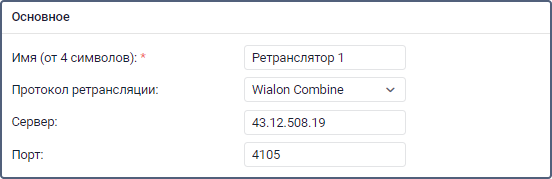
Шаг 3: Выбор объектов для ретрансляции
В списке Все объекты выделите необходимые объекты
Перенесите их в список Объекты для ретрансляции с помощью иконки переноса
Для быстрого поиска объектов используйте фильтры над списками
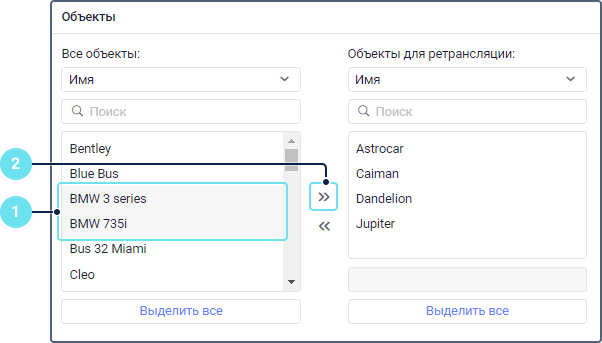
Важно: Сообщения от объектов с неуказанным уникальным ID не ретранслируются!
Шаг 4: Настройка идентификаторов объектов (при необходимости)
Если на стороннем сервере идентификатор объекта отличается от уникального ID объекта в Wialon:
Выделите объект в списке объектов для ретрансляции
Отредактируйте его идентификатор в поле под списком
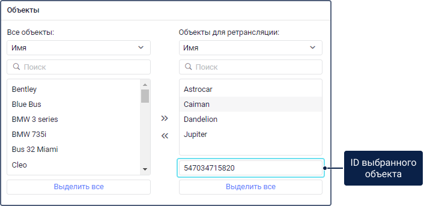
Шаг 5: Сохранение ретранслятора
Нажмите на кнопку Сохранить, чтобы создать ретранслятор.
Шаг 6: Запуск ретрансляции
Запустите созданный ретранслятор одним из способов:
Нажмите на иконку запуска (треугольник) рядом с ретранслятором в таблице
Откройте свойства ретранслятора и нажмите на кнопку запуска
Шаг 7: Ретрансляция данных за прошедший период (опционально)
В свойствах ретранслятора активируйте опцию Ретранслировать данные за прошедший период (доступна только для запущенных ретрансляторов)
Укажите период, за который необходимо ретранслировать данные
Нажмите на кнопку запуска справа от указанного периода
Примечание: Для начала ретрансляции данных за прошедший период может потребоваться до 10 минут.